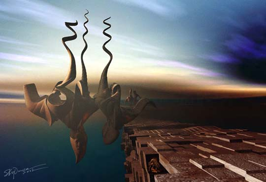
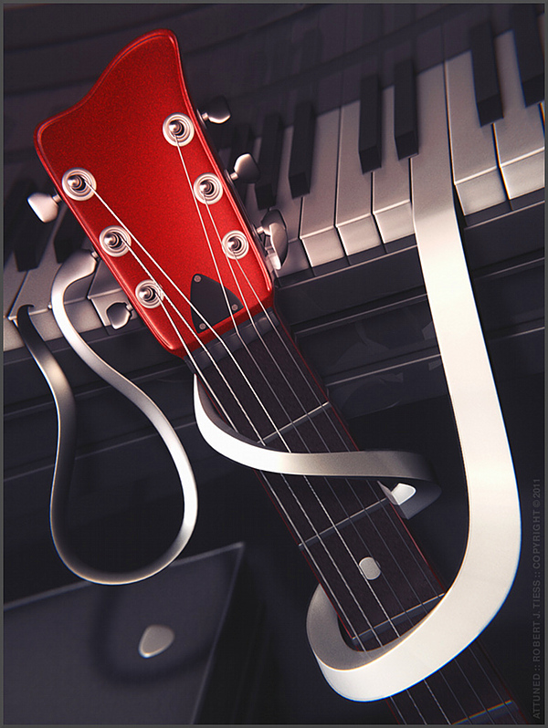

IMAGES OF THE DAY 105
05/11/2024 - 05/20/2024
05/11/2024
Mixed Technique
Abstract and Expressionistic
Eye in Back
by Siff Skovenborg
Click image to access artist's full exhibit


05/12/2024
Mixed Technique
Drawing with Light
The Cessation of All Desires
by Skydancer
Click image to access artist's full exhibit
05/13/2024
Mixed Technique
Digital Abstractions
Tribute to Pizza
by Barbara B. Stelluti
Click image to access artist's full exhibit


05/14/2024
Mixed Technique
Art of Interpretation
Attuned
by Robert J. Tiess
Click image to access artist's full exhibit
05/15/2024
Mixed Technique
Mixed Media Analog-Digital Art
Circle of Doshoku
by Takayoshi Ueda
Click image to access artist's full exhibit

05/16/2024
Mixed Technique
Lyric Abstraction
MO11
by Alain Valet
Click image to access artist's full exhibit

05/17/2024
Mixed Technique
The Fusion of Art and Technology
PanArch I
by Thomas Vilot
Click image to access artist's full exhibit

05/18/2024
Mixed Technique
New Work 2014
The Human Fly
by Eric Wayne
Click image to access artist's full exhibit

05/19/2024
Mixed Technique
Photo Manipulation, Painting and Drawing
Morning Sunrise
by Rod Whyte
Click image to access artist's full exhibit

05/20/2024
Mixed Technique
An Overview: Computer Art
Person in the City
by Catherine Yakovina
Click image to access artist's full exhibit